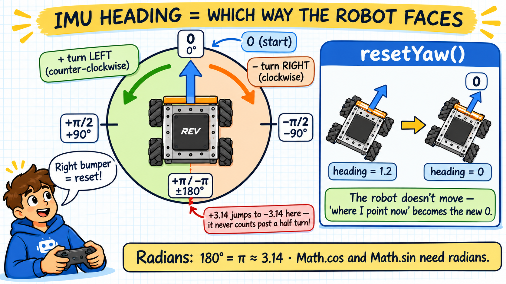
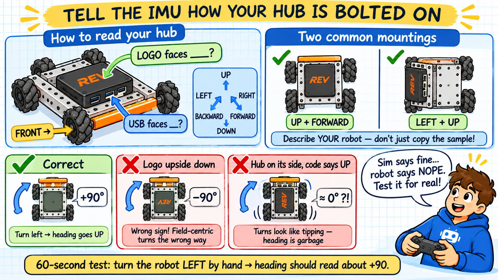

Your robot has a tiny sensor called an IMU — an Inertial Measurement Unit. Inside is a gyroscope that tracks how far the robot has rotated. Its most useful output is heading: the direction the robot is currently facing, like a compass.
An IMU measures rotation. When the robot starts, its heading is 0. Spin
counter-clockwise (to the left) and heading grows toward +π; spin clockwise and it drops
toward -π. FTC code reads it in radians because Math.cos and
Math.sin expect radians.

Why do we care? Without a heading, "forward" on the stick means "whatever way the robot is pointed." The moment the robot spins around, forward looks backward to the driver. In the next lesson we will use this heading to make forward always mean away from the driver — field-centric driving. First we need the heading itself.
Same move as the motors in Tank Drive: before you can use a class by its short name, you
import it. The IMU code in this lesson uses three new classes, so it needs three
new import lines. Add them first, so the code in the next steps compiles as you type it.
| Class | What it's for | Where it lives |
|---|---|---|
IMU | The sensor itself: you fetch it from the hardware map and read the heading from it. | com.qualcomm.robotcore.hardware — same section as DcMotor |
RevHubOrientationOnRobot | Describes how the Control Hub is bolted onto your robot (which way the logo and the USB ports face). | com.qualcomm.hardware.rev — the REV hardware section |
AngleUnit | Lets you say which units you want the angle in: AngleUnit.RADIANS or AngleUnit.DEGREES. |
org.firstinspires.ftc.robotcore.external.navigation — FIRST's navigation tools |
import com.qualcomm.hardware.rev.RevHubOrientationOnRobot;
import com.qualcomm.robotcore.hardware.IMU;
import org.firstinspires.ftc.robotcore.external.navigation.AngleUnit;Notice the first part of each name tells you who wrote it: com.qualcomm is the FTC robot library,
org.firstinspires is FIRST's own code. Missing one of these imports gives the same kind of
error as before: "IMU cannot be resolved to a type". Pressed Reset to Start? These
three are already in the starting code — check that they're there and move on.
Just like a motor, you fetch the IMU from the hardware map by name ("imu") during INIT, then
initialize it. Open MecanumDrive.java and jump to the setup spot:
IMU : Setup comment, in INIT.IMU imu = hardwareMap.get(IMU.class, "imu"); // grab the IMU from the config, by the name "imu"
// Wake the sensor up and tell it how the Control Hub is bolted onto the robot,
// so it knows which way is up and which way the robot faces.
imu.initialize(new IMU.Parameters( // hand the IMU a settings bundle...
new RevHubOrientationOnRobot( // ...that describes the hub's mounting:
RevHubOrientationOnRobot.LogoFacingDirection.UP, // the REV logo points UP
RevHubOrientationOnRobot.UsbFacingDirection.FORWARD)));// the USB ports point FORWARDThis block does two things. The first line fetches the IMU from the hardware map by its
config name "imu" — exactly like fetching a motor. The second statement,
imu.initialize(…), wakes the sensor up and tells it how it is mounted.
That initialize line looks intimidating because it is three new objects nested
one inside another. The trick is to read it from the innermost parentheses outward, like
simplifying a math expression:
new RevHubOrientationOnRobot(LogoFacingDirection.UP, UsbFacingDirection.FORWARD) —
the innermost piece. It describes how the Control Hub is mounted on the robot: the REV logo faces
UP, the USB ports face FORWARD.new IMU.Parameters( … ) — wraps that orientation into a tidy settings
bundle the IMU knows how to read.imu.initialize( … ) — hands the whole bundle to the IMU so it can start up
knowing which way is up and which way is forward.You will see this “new inside new” shape often in FTC code. The move
is always the same: find the innermost part, understand it, then read outward.
The IMU chip is inside the Control Hub, so it only knows how the hub is turned. Those two words,
LogoFacingDirection and UsbFacingDirection, tell it how the hub sits on your
robot. If they don't match what's actually bolted on, the heading is wrong. Nothing warns you: the code
compiles, the robot drives, and the numbers just don't make sense.
UP, DOWN, LEFT, RIGHT, FORWARD or BACKWARD.A hub lying flat, logo on top, USB ports toward the front is UP + FORWARD — that's
the simulator robot. A hub bolted standing up on a side plate is very common on real robots, and then the
logo faces LEFT or RIGHT, not UP.

What happens when it's wrong:
| Mistake | What you see |
|---|---|
| Logo on the wrong axis (the hub stands on its side, but the code says UP) |
The worst one. The IMU thinks your turns are the robot tipping over, so the heading barely changes when you spin, and it jumps when you bump or tilt the robot. Field-centric driving wanders, and autonomous turns overshoot or never stop. |
| Logo upside down (the code says UP but the logo faces DOWN, or the other way around) |
The heading is the right size but has the wrong sign: turn left and it goes negative. Field-centric drives turn the wrong way (push forward after a turn and the robot goes off at an angle), and autonomous turns go the opposite direction. |
| Logo right, USB wrong | Heading still works (turning around the up-down axis is measured correctly), but pitch and roll come out swapped or backwards. That breaks anything that uses tilt, like anti-tip code. Set it correctly anyway. |
| Logo and USB in the same or opposite direction (like UP + UP, or UP + DOWN) |
That's physically impossible, so the program stops at INIT with an error saying the two directions aren't perpendicular. |
The simulator's IMU always reports the correct heading, whatever you type for LOGO and USB. So code that works perfectly here can still be wrong on your robot. Do this 60-second check every time the hub is mounted or moved:
UP/DOWN
(or LEFT/RIGHT, etc.).Now read the heading inside the run loop, show it on the Driver Hub in both radians and degrees, and let the driver re-zero it with the right bumper. Jump to the loop spot:
▸ MecanumDrive.java : IMU : HeadingIMU : Heading comment, at the top of the loop.Heading change on the Driver Hub.0.double heading = imu.getRobotYawPitchRollAngles().getYaw(AngleUnit.RADIANS); // how far the robot has turned, in radians
telemetry.addData("Heading (deg)", Math.toDegrees(heading)); // show it in degrees (easy for humans to read)
telemetry.addData("Heading (rad)", heading); // ...and in radians (what the math will use)
if (gamepad1.right_bumper) { // driver presses the right bumper...
imu.resetYaw(); // ...to call "wherever I'm pointing now" the new zero heading
}That chain reads simply: getRobotYawPitchRollAngles() hands back all three orientation
angles, and .getYaw(AngleUnit.RADIANS) pulls out just the one we want — heading — in
radians.
imu.resetYaw() does not move the robot. It tells the IMU "whichever way I am
pointing right now is the new 0." Drivers use it at the start of a match so the robot's
current facing becomes forward, no matter how it was placed on the field.
The heading number only changes when the robot rotates. Driving straight or strafing leaves it
alone — that is exactly what you want. Notice it stays between -π and
+π (about ±3.14), never counting past a half turn.
The heading is now flowing into the drivebase every loop — but the drive code still ignores it, so the robot drives the same as before. Next lesson we put this heading to work.